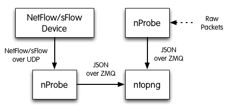

Параметры командной строки
ntopng поддерживает большое количество параметров командной строки. Чтобы узнать, что это такое, просто введите команду ntopng -h, и должна быть напечатана справочная информация.
Usage:
ntopng <configuration file path>
or
ntopng <command line options>
Options:
[--dns-mode|-n] <mode> | DNS address resolution mode
| 0 - Decode DNS responses and resolve
| local numeric IPs only (default)
| 1 - Decode DNS responses and resolve all
| numeric IPs
| 2 - Decode DNS responses but don't
| resolve numeric IPs
| 3 - Don't decode DNS/MDNS/HTTP/TLS responses
| and don't resolve numeric IPs (all hosts)
| 4 - Don't decode DNS/MDNS/HTTP/TLS responses
| and don't resolve numeric IPs (localhost only)
[--interface|-i] <interface|pcap> | Input interface name (numeric/symbolic),
| view or pcap file path, including:
| zmq://<IP address> [ZMQ flow collection]
| tcp://<IP address> [Deprecated - use zmq://]
| kafka://<brokers list> [Kafka flow collection]
| kafka-ssl://<brokers list> [Kafka flow collection over SSL/TLS]
[--data-dir|-d] <path> | Data directory (must be writable).
| Default: /var/lib/ntopng
[--install-dir|-t] <path> | Set the installation directory to <dir>.
| Should be set when installing ntopng
| under custom directories
[--daemon|-e] | Daemonize ntopng
[--httpdocs-dir|-1] <path> | HTTP documents root directory.
| Default: httpdocs
[--scripts-dir|-2] <path> | Scripts directory.
| Default: scripts
[--callbacks-dir|-3] <path> | Callbacks directory.
| Default: scripts/callbacks
[--pcap-dir|-5] <path> | Storage directory used for continuous traffic
| recording in PCAP format.
| Default: /var/lib/ntopng
[--no-promisc|-u] | Don't set the interface in promisc mode.
[--geoip-dir] <dir> | Load GeoIP databases from the specified directory.
[--http-port|-w] <[addr:]port> | HTTP. Set to 0 to disable http server.
| Addr can be an IPv4 (192.168.1.1)
| or IPv6 ([3ffe:2a00:100:7031::1]) addr.
| Surround IPv6 addr with square brackets.
| Prepend a ':' without addr before the
| listening port on the loopback address.
| Default port: 3000
| Examples:
| -w :3000
| -w 192.168.1.1:3001
| -w [3ffe:2a00:100:7031::1]:3002
[--https-port|-W] <[:]https port> | HTTPS. See also -w above. Default: 3001
[--http-log|-L] <path> | Log HTTP requests in the specified file
[--local-networks|-m] <local nets> | Local networks in CIDR format and
| autonomous system in asn<number> format.
| The file accepts multiple lines with networks in CIDR format.
| An optional '=<alias>' is supported
| to specify an alias.
| Examples:
| -m "192.168.1.0/24,172.16.0.0/16"
| -m "192.168.1.0/24=LAN_1,192.168.2.0/24=LAN_2,10.0.0.0/8"
| -m "/path/to/local_networks_file"
[--ndpi-protocols|-p] <file>.protos | Specify a nDPI protocol file
| (eg. protos.txt)
[--redis|-r] <fmt> | Redis connection. <fmt> is specified as
| [h[:port[:pwd]]][@db-id] where db-id
| identifies the database Id (default 0).
| h is the host running Redis (default
| localhost), optionally followed by a
| ':'-separated port (default 6379).
| The special characters \ and ` are not
| supported by ntopng.
| A password can be specified after
| the port when Redis auth is required.
| By default password auth is disabled.
| On unix <fmt> can also be the redis socket file path.
| Port is ignored for socket-based connections.
| Examples:
| -r @2
| -r 129.168.1.3
| -r 129.168.1.3:6379@3
| -r 129.168.1.3:6379:nt0pngPwD@0
| -r /var/run/redis/redis.sock
| -r /var/run/redis/redis.sock@2
[--core-affinity|-g] <ids> | Bind the capture/processing threads to
| specific CPU cores (specified as a comma-
| separated list of core id)
[--other-core-affinity|-y] <ids> | Bind service threads to specific CPU cores
| (specified as a comma-separated list of core id)
[--user|-U] <sys user> | Run ntopng with the specified user
| instead of ntopng
[--dont-change-user|-s] | Do not change user (debug only)
[--disable-purge] | Disable data purge (debug only)
[--ciphers-list] <list> | Specify the list of TLS ciphers to be used
| when https is used. Default: "HIGH:!aNULL:!MD5:!RC4"
[--shutdown-when-done] | Terminate after reading the pcap (debug only)
[--offline] | Run in offline mode (avoid contacting remote sites, including blacklists)
[--insecure] | Allow connections to TLS sites with invalid certificates
[--zmq-encryption] | Enable ZMQ encryption with a custom key
| (encryption is enabled by default with a
| public fallback key, see note below)
[--zmq-encryption-key-priv <key>] | ZMQ (collection) encryption secret key (debug only)
[--zmq-disable-encryption] | Disable ZMQ encryption, which is enabled
| by default (accept cleartext ZMQ messages)
[--zmq-publish-events <URL>] | Endpoint for publishing events (e.g. IPS)
[--disable-autologout|-q] | Disable web logout for inactivity
[--disable-login|-l] <mode> | Disable user login authentication:
| 0 - Disable login only for localhost
| 1 - Disable login for all hosts
[--max-num-flows|-X] <num> | Max number of active flows
| (default: 131072)
[--max-num-hosts|-x] <num> | Max number of active hosts
| (default: 131072)
[--pcap-reforge-timestamps|-z] | Reforge timestamps when reading from file
[--users-file] <path> | Users configuration file path
| Default: ntopng-users.conf
[--original-speed] | Reproduce (-i) the pcap file at original speed
[--log-labels} | Enable dump of host labels in /var/lib/ntopng/labels.log
[--pid|-G] <path> | Pid file path
[--packet-filter|-B] <filter> | Ingress packet filter (BPF filter)
[--dump-flows|-F] <mode> | Dump expired flows. Mode:
|
| es Dump in ElasticSearch database
| Format:
| es;<mapping type>;<idx name>;<es URL>;<username>:<password>
| Example:
| es;ntopng;ntopng-%Y.%m.%d;http://localhost:9200/_bulk;user:pwd
| Notes:
| The <idx name> accepts the strftime() format.
| <mapping type> must be set to ntopng and it is
| used until ElasticSearch version 6 and ignored in newer versions.
|
| syslog Dump in syslog
| Format:
| syslog[;<facility-text>]
| Example:
| syslog
| syslog;local3
| Notes:
| <facility-text> is case-insensitive.
|
| clickhouse Dump in ClickHouse (Enterprise M/L/XL/XXL)
| Format:
| clickhouse;<host[@[<tcp-port>,]<mysql-port]|socket>;<dbname>;<user>;<pw>
| Example:
| clickhouse;127.0.0.1;ntopng;default;
| You can also use just -F clickhouse as alias of:
| -F "clickhouse;127.0.0.1@9000,9004;ntopng;default;"
|
| clickhouse-cluster Dump in ClickHouse Cluster (Enterprise M/L/XL/XXL)
| Format:
| clickhouse-cluster;<host[@[<tcp-port>,]<mysql-port]|socket>;<dbname>;<user>;<pw>;<cluster name>
| Example:
| clickhouse-cluster;127.0.0.1;ntopng;default;ntop_cluster
| You can also use just -F clickhouse-cluster as alias of:
| -F "clickhouse-cluster;127.0.0.1@9000,9004;ntopng;default;ntop_cluster"
| NOTE:
| - tcp-port used by clickhouse-client
| - mysql-port used for queries
|
| clickhouse-cloud Dump in ClickHouse Cloud (Enterprise M/L/XL/XXL)
| Format:
| clickhouse-cloud;<host[@[<tcp-port>,]<mysql-port]|socket>;<dbname>;<clickhouse-user>,<mysql-user>;<pw>;
| Example:
| clickhouse-cloud;europe-east15.clickhouse.cloud@9440,3306s;ntopng;default,mysql-user;mych-password
| NOTE:
| - clickhouse-user used by clickhouse-client
| - mysql-user used for queries
| - tcp-port used by clickhouse-client
| - mysql-port used for queries
|
|
| kafka Dump to Kafka (Enterprise M/L/XL/XXL)
| Format:
| kafka;[<brokerIP[:<port>]]+;<topic>[;<kafka option>=<value>]+
|
| Example:
| "kafka;127.0.0.1;flows"
| "kafka;127.0.0.1:7689,192.168.1.20,192.168.1.2:9092;flows;compression.codec=gzip"
|
| See at the bottom of this help the list of supported kafka configuration options.
|
[--hw-timestamp-mode] <mode> | Enable hw timestamping/stripping.
| Supported TS modes are:
| apcon - Timestamped pkts by apcon.com
| hardware devices
| ixia - Timestamped pkts by ixiacom.com
| hardware devices
| vss - Timestamped pkts by vssmonitoring.com
| hardware devices
[--capture-direction] <dir> | Specify packet capture direction
| 0=RX+TX (default), 1=RX only, 2=TX only
[--cluster-id] <cluster id> | Specify the PF_RING cluster ID on which incoming packets will be bound.
[--http-prefix|-Z <prefix>] | HTTP prefix to be prepended to URLs.
| Useful when using ntopng behind a proxy.
[--instance-name|-N <name>] | Assign a name to this ntopng instance.
[--community] | Start ntopng in community edition.
[--fail-invalid-license] | Exit without a valid license.
[--check-license] | Check if the license is valid.
[--check-maintenance] | Check until maintenance is included
| in the license.
[--version|-V] | Print version and license
| information, then quit
[--version-json] | Print version and license
| info in JSON format, then quit
[--verbose|-v] <level> | Verbose tracing [range 0 (min).. 6 (max)]
| 0 - Errors only
| 1 - Warning
| 2 - Normal (default value)
| 3 - Informative
| 4 - Future use
| 5 - Future use
| 6 - Debug
[--print-ndpi-protocols] | Print the nDPI protocols list
[--ignore-macs] | Ignore packets MAC addresses
[--ignore-vlans] | Ignore packets VLAN tags
[--pcap-file-purge-flows] | Enable flow purge with pcap files (debug only)
[--simulate-vlans] | Simulate VLAN traffic (debug only)
[--simulate-macs] | Simulate MACs in the traffic (debug only)
[--simulate-ips] <num> | Simulate IPs by choosing clients and servers among <num> random addresses
[--limit-resources] | Non-essential features are disabled
| in order to save memory and threads
[--help|-h] | Help
Здесь кратко обсуждаются некоторые наиболее важные параметры.
[--redis|-r] <redis host[:port][@db-id]>
Ntopng использует Redis в качестве внутренней базы данных для хранения конфигурации и предпочтений пользователя. Redis должен быть запущен раньше ntopng. По умолчанию это местоположение
localhostно это можно изменить, указав хост и порт, на котором прослушивается Redis. В случае, если несколько экземпляров ntopng используют один и тот же сервер Redis, важно ли, чтобы предотвратить перезапись данных, указать"@db-id"строка, чтобы зарезервировать одну базу данных Redis для каждого экземпляра ntopng.
[—interface|-i] <interface|pcap>
В конце справочной информации приведен список всех доступных интерфейсов. Пользователь может выбрать один или несколько интерфейсов из списка, чтобы ntopng рассматривал их как отслеживаемые интерфейсы. Любой трафик, проходящий через контролируемые интерфейсы, будет виден и обработан ntopng. Интерфейс передается с использованием номера интерфейса (например,
-i 1) в системах Windows, тогда как это имя используется в системах Linux/Unix (например,-i eth0). Сеанс мониторинга с использованием нескольких интерфейсов можно настроить следующим образом:ntopng -i eth0 -i eth1Чтобы указать интерфейс ZMQ (который позволяет визуализировать удаленно собранные потоки с помощью nProbe и cento), вам следует добавить интерфейс типа
ntopng -i tcp://<endpoint ip>/Пример связи ntopng и nprobe:
nprobe -i eth0 -n none --zmq "tcp://*:5556" ntopng -i "tcp://<nprobe host ip>:5556"Также можно использовать ntopng в режиме коллектора и nProbe в режиме зонда (это может быть полезно, например, когда nProbe находится за NAT) следующим образом (обратите внимание на завершающую букву c после порта сбора)
nprobe -i eth0 -n none --zmq-probe-mode --zmq "tcp://<ntopng host ip>:5556" ntopng -i "tcp://*:5556c"Примечание
В ntopng 6.7.280831 и более поздних версиях ZMQ шифрование CURVE включено по умолчанию: ntopng больше не принимается. открытый текст ZMQ трафик из коробки. Пока пользовательские ключи не настроены с помощью
--zmq-encryption/--zmq-encryption-key-priv, ntopng и nProbe возвращаются к открытая встроенная пара ключей, которая предотвращает только случайное раскрытие открытого текста. Использовать--zmq-disable-encryptionесли вы хотите вернуться к предыдущему поведению и принимать сообщения в открытом виде ZMQ (старые развертывания).ntopng также может рассчитывать статистику на основе файлов трафика pcap:
ntopng -i /tmp/traffic.pcapntopng также способен (при использовании PF_RING) объединять два интерфейса в один поток трафика. Это полезно, например, когда необходимо объединить два направления (TX+RX) сетевого TAP. В этом случае имя интерфейса представляет собой объединение двух имен интерфейсов, разделенных запятыми, которые необходимо объединить, например:
ntopng -i eth0,eth1
[--http-prefix|-Z] <prefix>
Сетевые администраторы, которые хотят контролировать свою сеть, могут захотеть сопоставить веб-интерфейс ntopng с помощью обратного прокси-сервера. Основная проблема обратного проксирования заключается в том, что URI ‘/’ не следует сопоставлять с базой ntopng. Настраиваемые префиксы для базы ntopng можно выбрать с помощью опции префикса http.
Вообще говоря, когда используется префикс http, веб-интерфейс ntopng доступен, указав браузеру
http://<host>:<port>/<prefix>/Например, доступ к веб-интерфейсу ntopng можно получить по адресу
http://localhost:3000/myntopngесли он выполняется какntopng -Z /myntopngИспользуя Apache, можно добиться такого же поведения с помощью следующих директив http proxypass:
ProxyPass /myntopng/ http://192.168.100.3:3000/myntopng/ ProxyPassReverse /myntopng/ http://192.168.100.3:3000/myntopng/
[--dns-mode|-n] <mode>
Эта опция управляет поведением разрешения имени, выполняемого ntopng. Пользователь может указать, использовать ли полное разрешение, только локально или удаленно, или вообще не использовать разрешение.
[--data-dir|-d] <path>
Ntopng использует каталог данных для хранения нескольких видов информации. В этом каталоге хранится большая часть исторической информации, связанной с хостами и приложениями. Историческая информация включает файлы базы данных циклического перебора (RRD) для каждого приложения/хоста.
[--local-networks|-m] <local nets>
Ntopng характеризует сети двух категорий: локальные и удаленные. Следовательно, хосты также характеризуются как локальными, так и удаленными хостами. Каждый хост, принадлежащий локальной сети, является локальным. Аналогично, каждый хост, принадлежащий удаленной сети, является удаленным.
Для локальных хостов может храниться большой объем информации, включая их протоколы приложений уровня 7. Однако дополнительная информация предоставляется за счет дополнительной памяти и используемого пространства. Поэтому, хотя пользователю фактически хотелось бы пометить все возможные сети как локальные, на практике ему/ей придется найти хороший компромисс.
Локальные сети можно указать в виде списка адресов IPv4 (IPv6), разделенных запятыми, и масок подсети или ASN (номер автономной системы). Например, чтобы пометить три сети как локальные, ntopng можно выполнить следующим образом:
ntopng --local-networks="192.168.2.0/24,10.0.0.0/8,8.8.8.0/24,asn1234"В веб-интерфейсе ntopng локальные сети и хосты отображаются зеленым цветом, а удаленные сети и хосты — серым. Дополнительная информация будет доступна в контекстных меню локальных сетей.
Обратите внимание, что у вас есть возможность указать файл конфигурации, содержащий список сетей. Пример
ntopng --local-networks=/etc/ntopng/localnetworks.txtФормат файла определяет несколько локальных сетей, разделенных запятыми или в несколько строк. Пример:
192.168.2.0/24=office,192.168.2.1/32,8.8.8.8/32 asn5678 9.9.9.9/32 10.0.0.0/8
[--ciphers-list] <list>
Вы можете определить список шифров, как и для серверов HTTP, таких как Apache (см. SSLCipherSuite в https://httpd.apache.org/docs/trunk/en/ssl/ssl_howto.html).
[—disable-login|-l]
По умолчанию ntopng использует метод аутентификации для доступа к сети GUI. Аутентификацию можно отключить, добавив опцию Disable-login в параметры запуска. В этом случае любой пользователь, имеющий доступ к веб-интерфейсу, имеет права администратора.
Как упоминалось выше, для запуска ntopng можно использовать файл конфигурации. Все параметры командной строки можно указать в файле конфигурации, по одному в каждой строке. Опции должны быть отделены от их значений с помощью
=знак. Строки комментариев, начинающиеся с#знак также разрешен.
[--limit-resources]
В системах с ограниченными ресурсами (CPU/RAM) вы можете использовать этот флаг, чтобы ограничить использование ресурсов. Некоторые функции, такие как обнаружение сети или анализ трафика с периодичностью, будут отключены.
[--offline]
Если ntopng размещен в защищенной среде (например, с брандмауэром, ограничивающим подключение к Интернету), это может повлиять на производительность ntopng и удобство использования. ntopng автоматически пытается определить наличие ограниченного подключения и переключается на офлайн режим. Также возможно принудительно офлайн режим в ntopng, добавив
--offlineвариант. Этот режим не позволит ntopng связаться с какими-либо внешними службами. Список IP/хостов, с которыми ntopng связывается, когда он не в сети, включает в себя:github.com (для проверки подключения — это можно настроить в «Настройки» -> «Настройки» -> «Разное»)
packages.ntop.org
blog.ntop.org
черные списки (их можно настроить в меню «Настройки» -> «Списки категорий»)
Предупреждение
В отличие от своего предшественника, ntopng сам по себе не является коллектором Netflow. Он может действовать как коллектор Netflow в сочетании с nProbe. Чтобы выполнить это подключение, начните nProbe с --zmq параметр и укажите параметр интерфейса ntopng на конечную точку nProbe ZMQ. Использование этой конфигурации дает администратору возможность использовать ntopng в качестве сборщика GUI для отображения данных либо с захваченного трафика nProbe, либо с устройств с поддержкой Netflow, как показано на следующем рисунке.

Настройка ntopng/nprobe